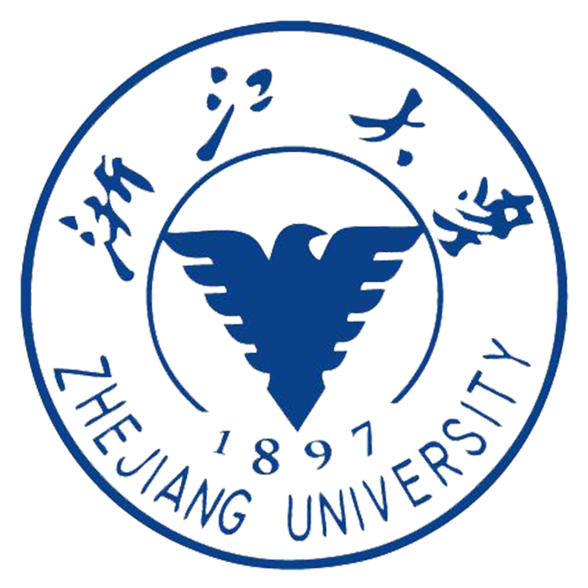
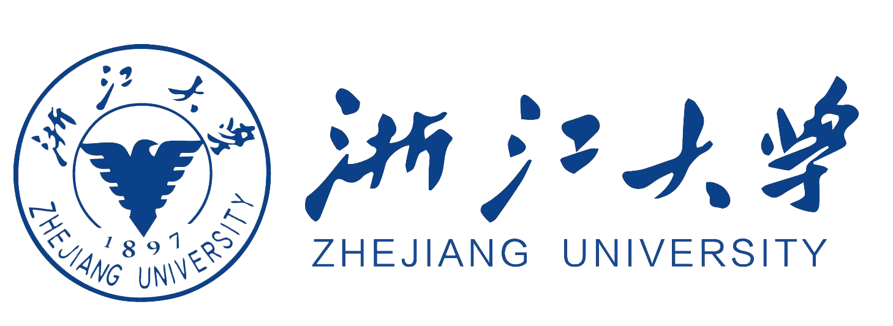

实践背景
交代现实情境中的核心矛盾、行业痛点或治理需求，说明该问题为何具有研究必要性。


毕业答辩 / 开题汇报 / 通用演示
Zhejiang University Graduation Reply HTML Presentation Template
CONTENT
说明研究起点、现实场景以及本次汇报的核心问题。
交代总体目标、研究思路和方法结构。
说明样本、变量、识别策略以及研究设计的规范性。
概括研究创新、后续计划与预期贡献。
围绕现实场景、文献缺口与核心研究问题，说明本研究为什么值得开展。
本页建议用一到两句话直接交代“为什么要研究这个问题”。答辩汇报中，评委最先关心的是选题是否重要、是否真实存在文献空白，以及你的研究问题是否足够明确。
交代现实情境中的核心矛盾、行业痛点或治理需求，说明该问题为何具有研究必要性。
概括已有研究的主要观点与不足，说明当前研究在对象、方法或结论上的空白。
明确本研究要回答的核心问题，并引出后续的理论分析、研究设计与实证检验。
正式答辩更适合把“背景、缺口、问题”放在同一页讲清楚，这样能够更自然地过渡到下一页的研究目标与技术路线。
梳理研究脉络，构建概念框架与分析逻辑。
将理论命题转化为可检验的假设与变量关系。
说明数据来源、样本构造、模型设定与识别策略。
呈现主要结论、稳健性检验与进一步讨论。
答辩现场建议按照“理论分析 → 假设提出 → 设计检验 → 结果解释”的顺序推进，逻辑最清楚。
简明说明研究对象、样本筛选标准、时间范围以及缺失值处理方式。
交代被解释变量、解释变量与控制变量的定义、口径与测量方式。
说明模型设定、识别思路、稳健性检验以及可能的内生性处理方案。
正式答辩中，这一页的重点不是“写很多字”，而是让评委快速判断你的研究设计是否完整、规范、可信。
从新的理论视角切入，重新解释传统研究中的关键关系。
在研究设计或模型构建上提出更适合当前问题的处理方式。
将研究结论进一步转化为可执行的管理建议或政策启示。
明确研究问题，完善变量定义与研究假设。
完成样本清洗、模型设定和初步结果输出。
完善异质性分析、机制分析及附录结果。
统一图表格式、优化汇报逻辑、整理答辩问答准备。
THANK YOU